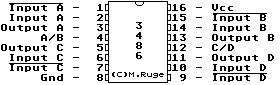
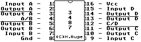

Previous
Next
TOC
MC3486 (Quad RS-422/RS-423 Line Receiver)

General Description
The 3486 is an quad RS-422, RS-423 receiver features four indepen-
dent receivers which comply with EIA Standards for the electrical
characteristics of balanced/unbalanced voltage digital interface
circuits. Receiver outputs are 74LS compatible, TRI-STATE structures
which are forced to a high impedance state when the appropriate out-
put control pin reaches a logic zero condition. A PNP device buffers
each output control pin to assure minimum loading for either logic
one or logic zero inputs. In addition, each receiver has internal
hysteresis circuitry to improve noise margin and discourage output
instability for slowly changing input waveforms.
Features
Four independent receivers
TRI-STATE outputs
Internal hysteresis -140 mV (typ)
Fast propagation times -19 ns (typ)
TTL compatible outputs
5V supply
Pin compatible and interchangeable with MC3486, DS3486

MC3487 (Quad TRI-STATE Line Driver)
General Description
The 3487 is an quad RS-422 driver features four independent drivers
which comply with EIA Standards for the electrical characteristics
of balanced voltage digital interface circuits. The outputs are
TRI-STATE structures which are forced to a high impedance state when
the appropriate output control pin reaches a logic zero condition.
All input pins are PNP buffered to minimize input loading for either
logic one or logic zero inputs.
Features
Four independent drivers
TRI-STATE outputs
Fast propagation times (typ 10 ns)
TTL compatible
5V supply
Output rise and fall times less than 15 ns
Pin compatible with DS8924, DS3487 and MC3487
Kapitel MC3486 (Line Receiver) und MC3487 (Line Driver), Seite 1